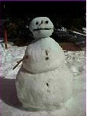

CS3, the Intro computer survey class at Santa Monica College, is offered every semester. Several
sections are available. Nevertheless, the popularity of the class has meant in the past that not all students
wanting to take the class could be admitted.
The primary textbook for this course is Computers, Tools for and Information Ages by H. L. Capron
click on the image to see a larger version
click here for informational class web page
The class covers several area of study: